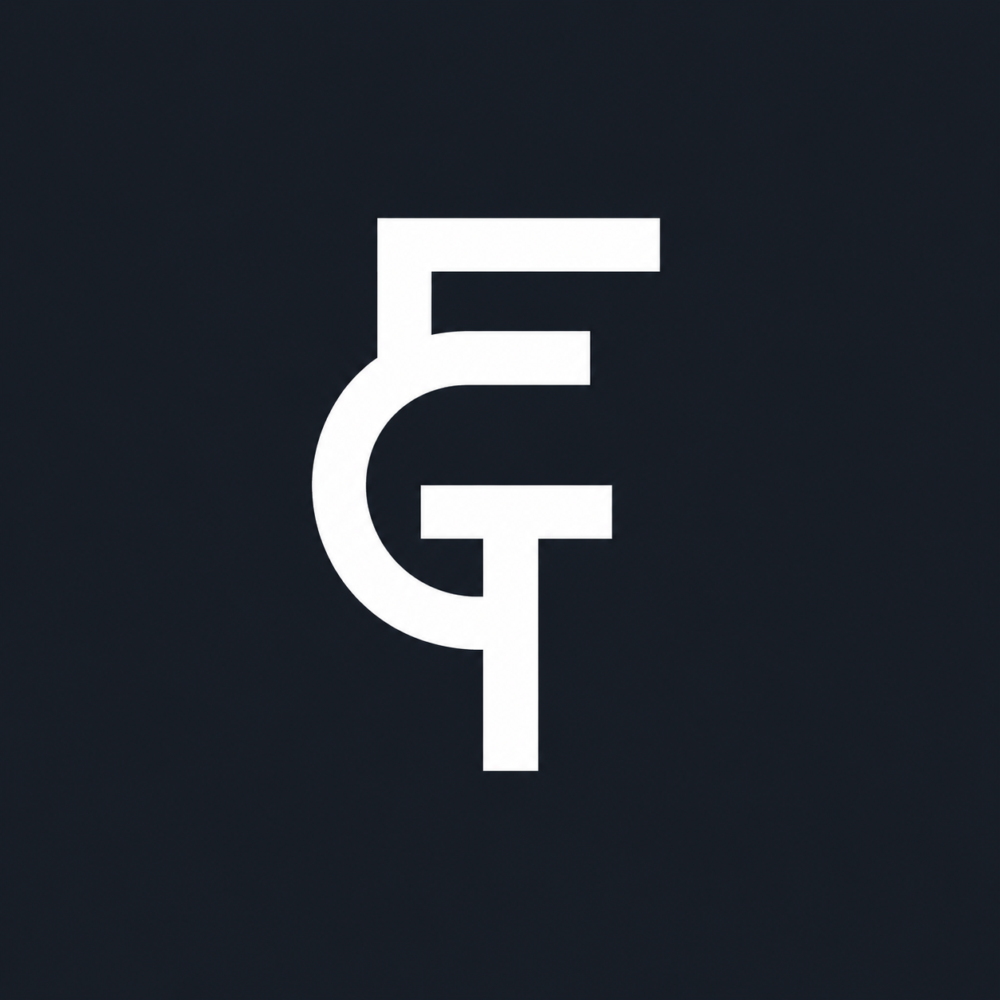

Plataforma web para la gestión integral de la Formación en Centros de Trabajo.
La gestión de la FCT en los centros de FP se apoya en hojas de cálculo, correos y carpetas compartidas. Información dispersa, sin trazabilidad real y con un coste administrativo creciente curso tras curso.
Alumnado, empresas, tutores y coordinadores conviven en el mismo proceso pero sin un sistema único que los conecte. La información de calidad se queda en la memoria informal del profesorado.
Un CRM o gestor genérico no encaja con el flujo real de la FCT. Se necesita una herramienta diseñada para el dominio: ofertas, candidaturas, asignaciones y seguimiento.
Un proyecto integrador que aplica todas las áreas troncales del ciclo: BBDD, REST, seguridad, SPA, pruebas y despliegue cloud en un caso de uso real.
Diseñar, desarrollar y desplegar una plataforma web full-stack que centralice el ciclo completo de la Formación en Centros de Trabajo.
Catálogo, candidaturas, perfil, CV y seguimiento de asignación.
Alta y mantenimiento de ofertas, gestión de candidaturas recibidas.
Onboarding del alumnado, mensajería y seguimiento durante la estancia.
Validación, reasignación y formalización de la asignación oficial.
Rol reservado para gestión de credenciales del personal de centro.
@Valid y manejadores de excepciones.Servicios PracticasCacheService, AsignacionesCacheService y TutorCacheService muestran los datos cacheados al instante mientras la API responde en segundo plano.
Resultado: la latencia percibida en las pantallas más frecuentes cae a casi cero.
mvn test + npm test + npm run build.De alumno a asignación oficial, en menos de tres minutos.
Acceso con cuenta de centro y token JWT.
Filtros + ofertas internas y externas (Adzuna).
Postulación desde la vista de detalle.
El coordinador formaliza horas, fechas y retribución.
→ Frontend: fctnow.vercel.app · API: fctnow-backend.onrender.com/api
Fallback degradado: si Adzuna no responde, el catálogo interno sigue funcionando sin error fatal.
Tres proveedores cloud distintos (Render, Vercel, Supabase) coordinados por configuración.
Seed Flyway repeatable que crea el tutor inicial a partir de variables de entorno.
SSR y caché en cliente para que el primer acceso sea rápido pese al arranque en frío.
Restricciones UNIQUE y CHECK en BD para evitar duplicados e inconsistencias.
Importación Excel con Apache POI + correo automático conforme a la convención del centro.